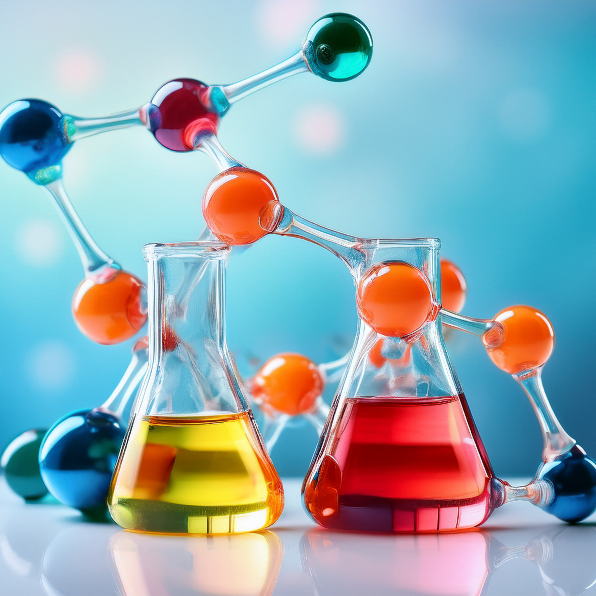

Selecciona una lección para comenzar a aprender:

Protones, neutrones y electrones: las piezas de Lego del universo.
Aprende qué es el Número Atómico (Z) y el Número Másico (A).
¿Qué ocurre si un átomo pierde electrones o gana neutrones?